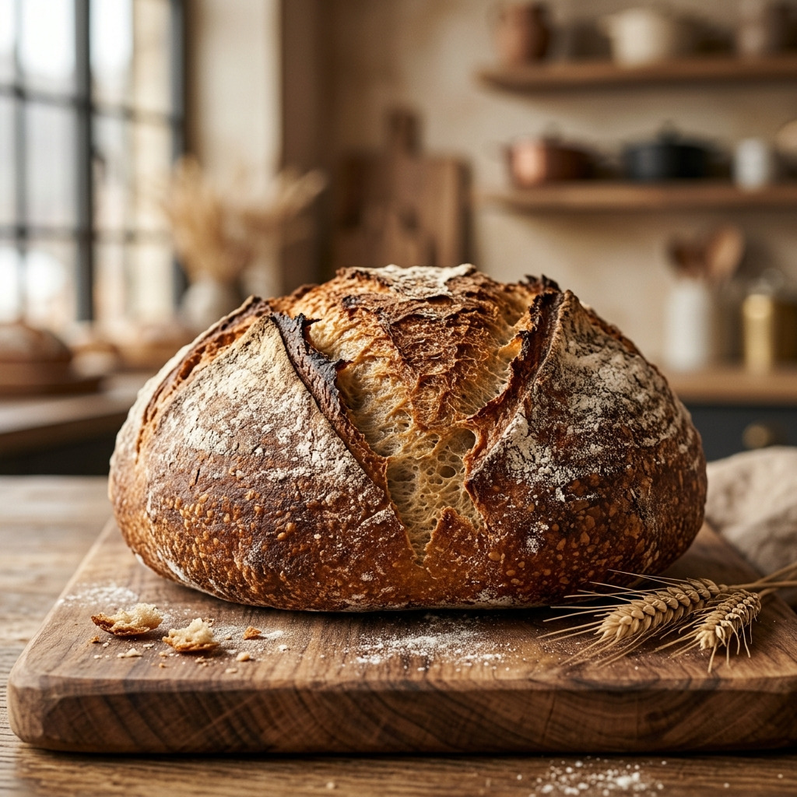
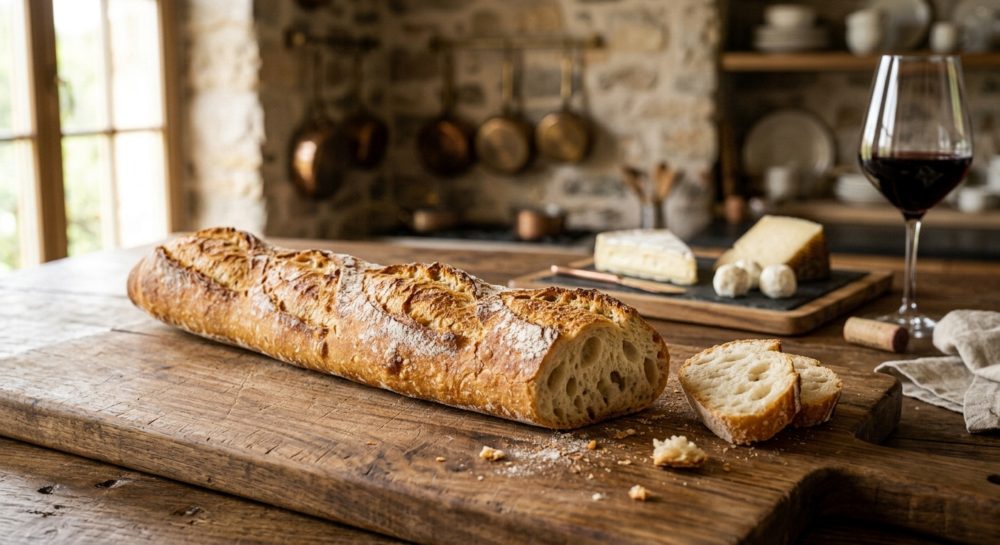
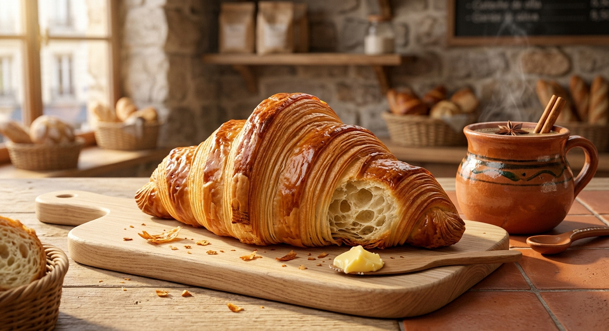
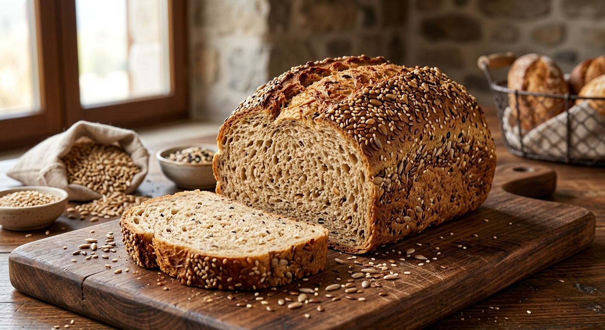
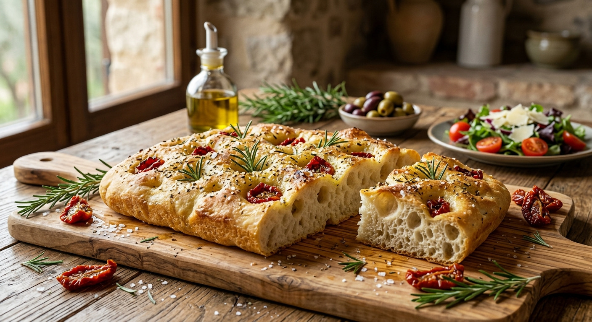

En El Trigal, honramos la tierra y elevamos el arte de la panadería.
- Calidad:Selección estricta de harinas orgánicas, masa madre viva y los ingredientes más puros.
- Tradición:Recetas transmitidas de generación en generación, preservando la esencia de la panadería artesanal.
- Innovación:Implementamos técnicas modernas sin perder la esencia tradicional.
- Compromiso: Nos dedicamos a ofrecer productos de la más alta calidad, elaborados con pasión y dedicación.
- Pan de Campo Gourmet
- Corteza rústica, miga húmeda y sabor intenso. Ideal para acompañar comidas caseras o gourmet.
- Baguette de Masa Madre
- Ligera, crujiente y con aroma profundo. Perfecta para quesos y vinos.
- Croissant Artesanal
- Hojaldrado, con mantequilla pura y textura delicada. Un clásico francés con toque mexicano.
- Pan Integral con Semillas
- Mezcla de linaza, girasol y ajonjolí. Nutritivo, suave y lleno de energía.
- Focaccia Mediterránea
- Con aceite de oliva extra virgen, romero y tomates secos. Ideal para compartir o acompañar ensaladas.





Más que pan, creamos momentos memorables alrededor de la mesa.